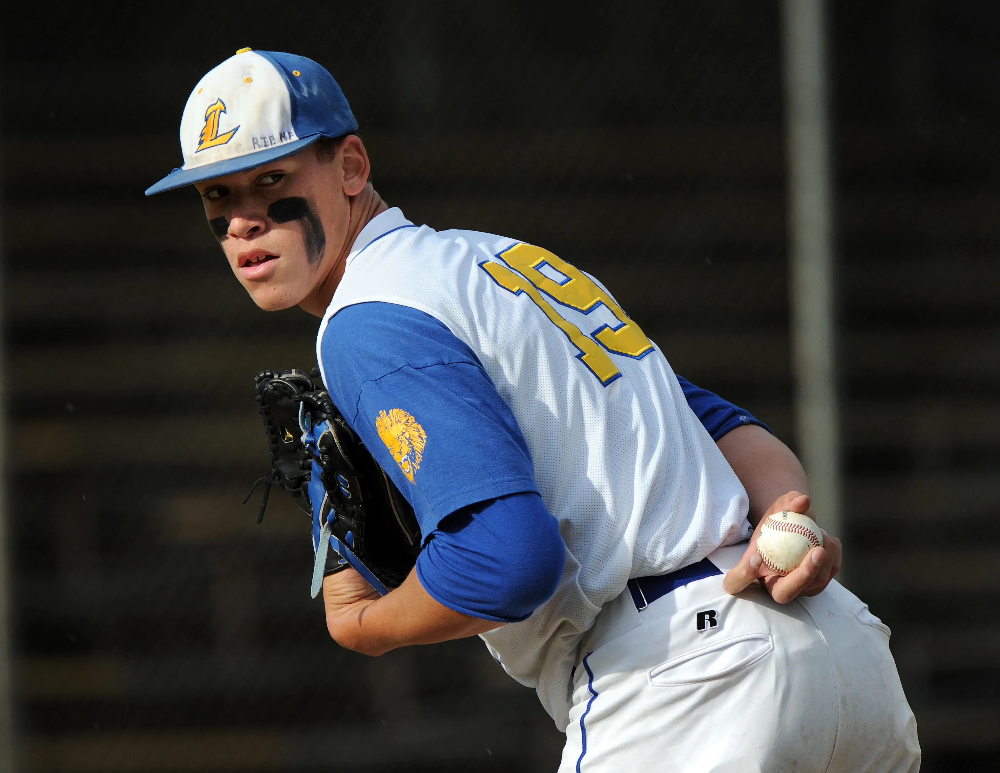

Early Life and Career Beginnings
Aaron Judge was born on April 26, 1992, in Linden, California. From a young age, Judge displayed exceptional athleticism and a passion for baseball. He attended Linden High School, where he excelled in both baseball and football. Judge's impressive performance on the field earned him a scholarship to play college baseball at Fresno State University. His talent and dedication caught the attention of Major League scouts, leading to his selection by the New York Yankees in the first round of the 2013 MLB Draft.
Major League Debut and Rise to Stardom
Aaron Judge made his Major League debut with the New York Yankees on August 13, 2016. It didn't take long for him to make an impact, as he quickly established himself as one of the most formidable power hitters in baseball. Known for his towering home runs and impressive defensive skills in right field, Judge became a fan favorite and a key player for the Yankees. In his rookie season, he set a new MLB record for most home runs by a rookie with 52, earning him the American League Rookie of the Year award.
Career Highlights and Achievements
Throughout his career, Aaron Judge has continued to impress with his power and consistency at the plate. He has been selected to multiple All-Star teams and has won several Silver Slugger Awards. In 2022, Judge had a historic season, hitting 62 home runs, breaking the American League single-season home run record previously held by Roger Maris. Judge's leadership and work ethic have also made him a respected figure in the clubhouse, and he was named the Yankees' team captain in 2022.
Learn more about Aaron Judge